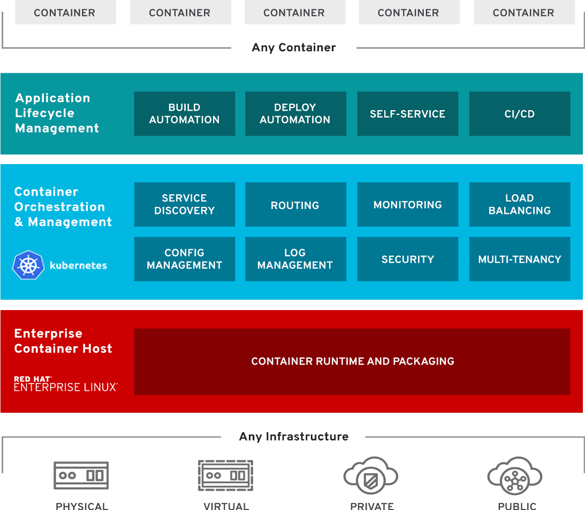
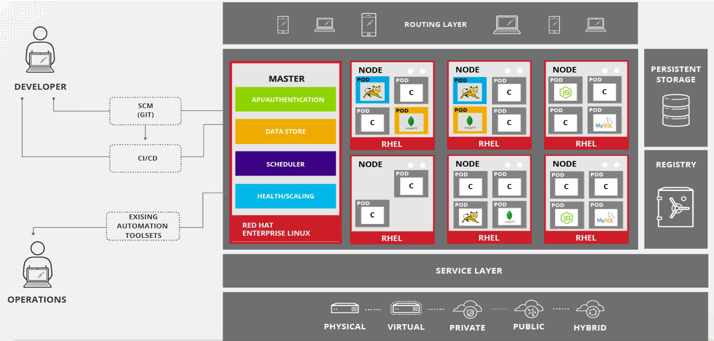
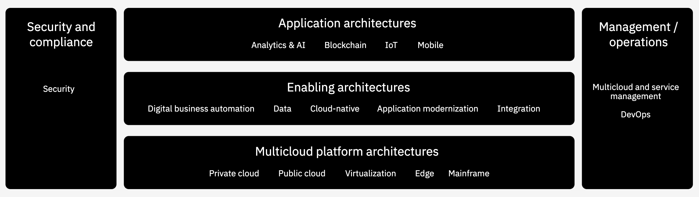
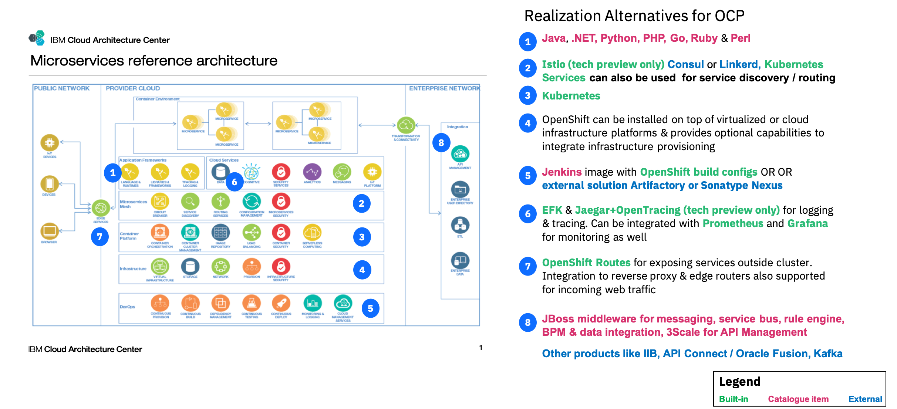

Welcome to the Journey to Cloud Summit
Evrim Özçelik
2020, March
Table of Contents
Canary Release with OpenShift Demo Flow

OpenShift Overview

OpenShift Architecture

IBM Cloud Architectural Model

IBM Microservices with OpenShift

More info
- DOCUMENTATION.md is the API reference.
- Source of this presentation itself is commented
- Advanced Impress.js demo by @bartaz
- More examples and demos:
- examples/ in this repository
- on the impress.js wiki
- Check out Impressionist: a 3D GUI to create impress.js presentations